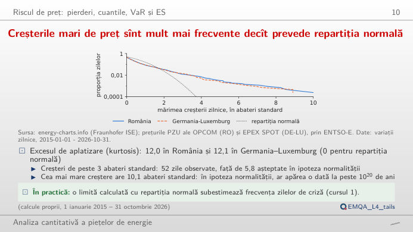
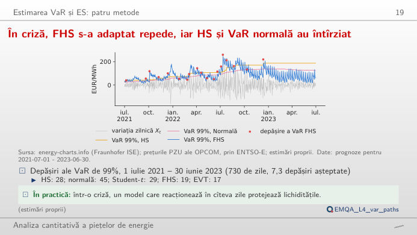
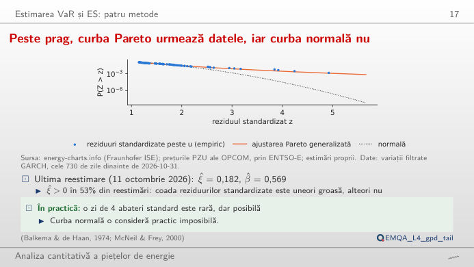
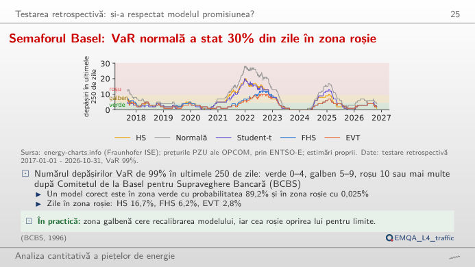
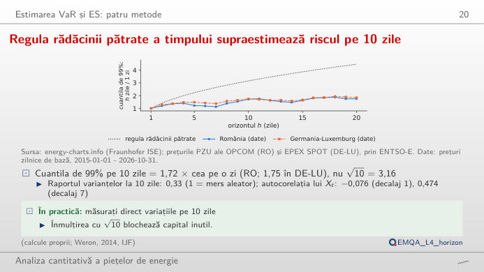
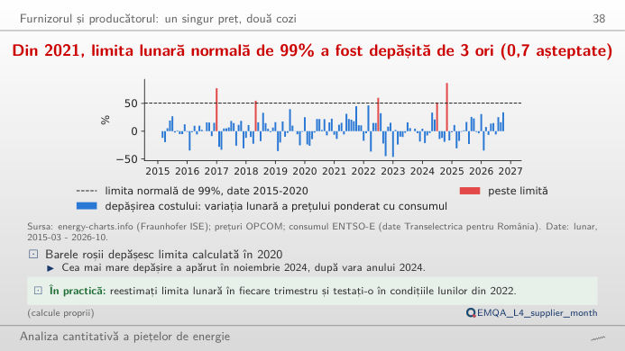

În stînga este slide-ul din curs, în dreapta aceeași figură, recalculată în browser din datele cursului (data/clean) cînd modificați un control. Factorul de risc este variația zilnică a prețului de bază PZU din România, Xt = Pt − Pt−1 (EUR/MWh): o creștere este o pierdere pentru un furnizor care cumpără pe piața pentru ziua următoare. VaR (Value at Risk, valoarea la risc) este o cuantilă a pierderii, ES (Expected Shortfall, pierderea așteptată în coadă) media pierderilor de dincolo de ea. Butonul ▶ modifică parametrul principal pas cu pas.
Riscul de preț: pierderi, cuantile, VaR și ES · Estimarea VaR și ES: patru metode · Testarea retrospectivă a VaR și ES · De la cuantile la marje, garanții și limite · Riscul de preț pentru furnizori și producători
Riscul de preț: pierderi, cuantile, VaR și ES
Creșterile mari de preț sînt mult mai frecvente decît prevede repartiția normală

Răspuns
Variațiile zilnice au cozi groase: excesul de kurtosis este 11,97, iar creșterile de peste trei abateri standard sînt 52, față de 5,82 așteptate în legea normală. VaR normal subestimează deci cuantilele extreme, iar diferența crește odată cu α. ES (media pierderilor de dincolo de VaR) reacționează și mai puternic, pentru că mediază zilele extreme pe care curba normală nu le vede. Alegeți perioada 2021–2022 pentru anii de criză sau ultimele 365 de zile pentru riscul actual.
Estimarea VaR și ES: patru metode
În criză, FHS s-a adaptat repede, iar HS și VaR normală au întîrziat

Răspuns
Modelul normal este depășit în 45 de zile, simularea istorică (HS) în 28, FHS în 19, iar EVT în 17 (așteptat: 7,3). Toate metodele au fost prea jos în criză, dar FHS, care scalează reziduurile cu o volatilitate GARCH (model autoregresiv generalizat cu heteroscedasticitate condiționată), reacționează în cîteva zile la un salt al volatilității, în timp ce HS și modelul normal, cu o fereastră de 365 de zile, se adaptează lent. Testul Kupiec din sinteză compară rata depășirilor din fereastră cu 1 − α.
Peste prag, curba Pareto urmează datele, iar curba normală nu

Răspuns
Da, și aceasta este principala dificultate practică a teoriei valorilor extreme (EVT): un prag jos dă multe depășiri, dar amestecă și corpul distribuției; un prag înalt folosește doar cîteva zeci de puncte, iar estimația devine instabilă. Mutați u de la 80% la 97% și urmăriți ξ și cuantila de 99,9% implicată. În curs, forma estimată la pragul de 90% variază între −0,38 și 0,33 în cele 171 de reestimări din 2017, fiind pozitivă în 53% dintre ele.
Testarea retrospectivă a VaR și ES
Semaforul Basel: VaR normală a stat 30% din zile în zona roșie

Răspuns
În 29,5% din zile de cînd fereastra de testare s-a umplut (din septembrie 2017), față de 6,2% pentru FHS și 2,8% pentru EVT; un model corect ar fi în zona roșie doar 0,025% din timp. Zonele sînt cuantile binomiale: verde cît timp probabilitatea cumulată a numărului de depășiri într-o lege Binomial(n, 1%) este sub 95%, roșu de la 99,99%. Schimbați fereastra pentru a vedea cum se scalează pragurile cu n.
De la cuantile la marje, garanții și limite
Regula rădăcinii pătrate a timpului supraestimează riscul pe 10 zile

Răspuns
Doar 1,72 (Germania–Luxemburg: 1,75). Variațiile zilnice ale prețului sînt autocorelate negativ (ρ(1) = −0,076): un salt de preț este urmat de o scădere, deci variațiile pe mai multe zile se compensează parțial. Raportul varianțelor la 10 zile este 0,33, mult sub 1. Regula √h presupune variații independente și ar supraestima VaR pe 10 zile al unei poziții de bandă pe PZU.
Riscul de preț pentru furnizori și producători
Din 2021, limita lunară normală de 99% a fost depășită de 3 ori (0,7 așteptate)

Răspuns
Trei luni din 70, față de 0,7 așteptate; cea mai rea este noiembrie 2024, +86,6% (circa 5,96 milioane EUR pentru 100 MW cu profilul consumului național). Limita estimată pe anii calmi este prea strînsă pentru criză și pentru perioada de după. Mutați sfîrșitul eșantionului de estimare: o limită care include 2021–2022 este mai largă, iar numărul depășirilor ulterioare scade.
Prețurile zilnice de bază: OPCOM PZU (România), EPEX SPOT (Germania–Luxemburg), prin energy-charts.info (Fraunhofer ISE) și ENTSO-E (Rețeaua europeană a operatorilor de transport și sistem pentru energie electrică); consumul orar al României: ENTSO-E (date Transelectrica). Prognozele VaR pentru ziua următoare, din 2017-01-01: lectures/L4/analysis_L4.py (fiecare prognoză folosește doar variațiile cunoscute în ziua anterioară). Date pînă la 2026-10-31, data-limită a cursului.